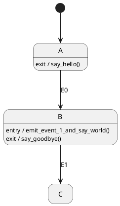

- Generated by
 1.13.2
1.13.2
|
Maki
|
Run-to-completion is the guarantee that the processing of an event can't be interrupted by the processing of another event.
The simplest way to explain what run-to-completion is is to show what happens when it isn't guaranteed. Say you have a state machine of this form:

Its actions are the following:
say_hello(), which outputs "Hello";emit_event_1_and_say_world(), which emits the event E1 and outputs ", World!" (in this order);say_goodbye(), which outputs "\nGoodbye.".Say the active state is A and some external component emits the event E0. This makes the state machine transition from A to B, then from B to C since the entry action of B emits the event E1.
With run-to-completion, you'd have got this output:
Without run-to-completion, you get this one:
Frightening.
What is happening is that the processing of E0 and the processing of E1 are intertwined; the state machine:
E0;E1 from beginning to end;E0.With run-to-completion, both events would have been fully processed sequentially.
Always use run-to-completion, unless you can't afford its performance penalty.
This feature indeed comes at a cost; to guarantee run-to-completion, a state machine library must use a queue of some sort to store the events its client asks to process while it's busy. This might involve memory allocation.
Obviously, if you dare disabling it, be absolutely sure none of your actions asks to process an event, neither directly nor indirectly. But be assured that the bigger your program and your development team, the harder it is to enforce.
Being a safety feature, run-to-completion is enabled by default. You can disable it like so: